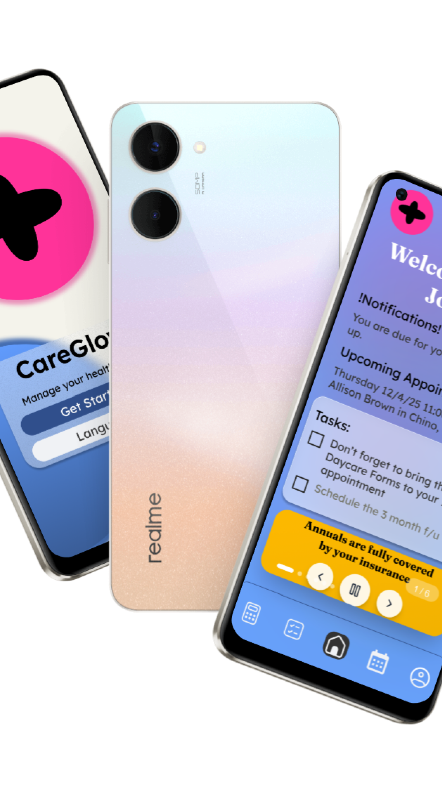

Overview
Mobile first for accessibility
CareGlow is a patient-centered healthcare companion app designed to simplify how people manage their medical lives. Built-in translation ensures it supports users of all languages — book appointments, manage insurance, estimate costs — all in one place, with clarity and confidence.

"After spending 2 years in the healthcare industry, it became clear that surprise billing is patient's biggest concern — creating a breakdown of trust between patients, insurance, and providers, with no obvious point of accountability."
— Research Insight
The Problem
Healthcare friction begins with billing
Extensive survey research and interviews with real providers and patients revealed that most adults struggle most with health insurance — specifically a lack of pricing transparency. Young adults and elderly people have become particularly vulnerable, regardless of background.
Front Desk Overload
Medical assistants can't resolve billing questions — patients wait months for resolution.
Insurance Opacity
Patients delay appointments over billing fears, leading to irregular checkups and reduced care quality.
Language Barriers
Non-English speakers face compounded friction in a system not designed for their needs.
Process
Sketch → Sitemap → Wire → Build
Initial ideation began with paper sketches, rapidly translating user needs into low-fidelity wireframes. The site map guided information architecture, ensuring a logical patient journey from onboarding through appointment management and billing.
Low-fidelity wireframes were tested with real users to validate core flows before moving to high-fidelity screens.
Low Fidelity Wireframes
Paper to pixels — testing before building
Lo-fi wireframes were created for every core screen before any visual design began. Each screen was tested with real users to validate information hierarchy, flow logic, and accessibility before moving to high-fidelity.
Information Architecture
Site Map
The site map was built around a single core insight: patients don't think in system categories — they think in tasks. The architecture reflects this by surfacing the four most critical actions from the dashboard and keeping navigation shallow.
- Insurance history & coverage
- Saved providers
- Appointment history
- Edit & Sign out
- Interactive calendar
- Provider selection
- Pricing estimate
- Confirmation screen
- Office visit estimator
- Insurance-based calc
- Estimated cost display
- Redirect to scheduler
- Notes & reminders
- Rich text editor
- Calendar sync
- Trash / Archive
Style Guide
Visual System
Warm clinical confidence — a vibrant pink primary paired with a trustworthy blue, grounded by deep navy authority and softened by sage green. Together they signal care that is both credible and human.
Pink Primary
#FF3399
Trust Blue
#446DB1
Sage Green
#71A995
Deep Navy
#304F8C
Typography
Type system — Care You Can See
Two typefaces define CareGlow's voice: a literary serif for warmth and authority at display scale, and a clean geometric sans for accessible, readable interface copy.
Display / Hero
Fraunces Bold — H1 (60px), H2 (40px), hero callouts
Body / Interface
Lexend Regular — Body 1 (32px), Body 2 (24px), Body 3 (20px)
Brand / Logo
Lexend SemiBold — wordmark, nav, primary labels
Prototype
Interactive prototype — try it yourself
A fully interactive prototype built in React — tap through the full patient journey from onboarding to appointment booking, cost estimation, and insurance management. No account needed, all data stays local in your browser.